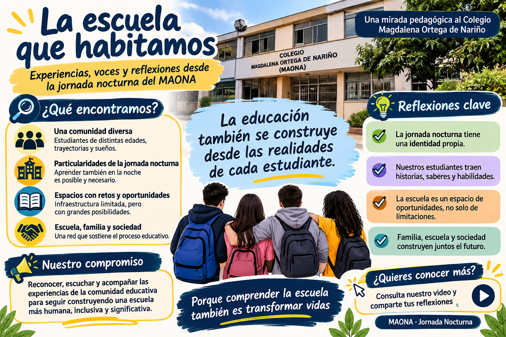

◌
Trayectorias diversas
En la jornada nocturna coinciden adolescentes, jóvenes y personas adultas. Sus recorridos educativos, experiencias laborales, responsabilidades y expectativas no son iguales.
La escuela que habitamos
Experiencias, voces y reflexiones desde la jornada nocturna del Colegio Magdalena Ortega de Nariño.
PRÁCTICA EN CIENCIAS SOCIALES · 2026Entrar a la muestra ↘Esta muestra reúne observaciones, intervenciones y reflexiones construidas durante la práctica pedagógica en la jornada nocturna del MAONA. No busca presentar un diagnóstico definitivo de la institución, sino compartir preguntas que surgieron al observar cómo se enseña, se aprende y se convive en condiciones concretas.
La jornada nocturna no puede comprenderse únicamente como una versión reducida de la jornada diurna. En ella confluyen trayectorias, edades, responsabilidades y experiencias distintas que inciden en la vida escolar.
La práctica no ofrece respuestas definitivas; deja preguntas que pueden orientar nuevas conversaciones y transformaciones.
¿Qué condiciones hacen posible habitar plenamente la escuela?
Hallazgos situados a partir de la observación de clases, las conversaciones y las actividades institucionales.
En la jornada nocturna coinciden adolescentes, jóvenes y personas adultas. Sus recorridos educativos, experiencias laborales, responsabilidades y expectativas no son iguales.
La disponibilidad de espacios y recursos durante la noche presenta restricciones. Los horarios, la cena, las variaciones de asistencia y los cambios institucionales también inciden en la dinámica pedagógica.
La entrega de boletines mostró formas distintas de vinculación. La presencia de acudientes no siempre se traduce en diálogo pedagógico; tampoco existe una única forma de familia o acompañamiento.
Las conversaciones sobre territorio, lluvia, humedales, conflicto armado, memoria y relaciones de poder permitieron conectar contenidos de Ciencias Sociales con experiencias y preguntas del presente.
La clase sobre Nietzsche y la “muerte de Dios” abrió preguntas sobre la tradición judeocristiana y los valores heredados. Más tarde, la incertidumbre alrededor de un campeonato mostró cómo las decisiones institucionales modifican tiempos, expectativas y formas de participación. El encuentro deportivo reunió estudiantes de distintos ciclos, aunque no todos compartían el mismo interés por jugar.
En el trabajo sobre las revoluciones burguesas, los videos pausados y las preguntas permitieron relacionar recursos económicos y poder político. Algunos estudiantes participaron oralmente, aunque no todos produjeron una evidencia escrita. Esto obligó a revisar la idea de que una hoja en blanco equivale necesariamente a ausencia de aprendizaje.
Los registros también recogen conversaciones sobre cambio climático, lluvia, humedales, la Chucua La Vaca, Doña Juana, la JEP y el conflicto armado. En otras sesiones, el tiempo reducido, las interrupciones, la asistencia variable y las cargas emocionales exigieron modificar la planeación y pensar formas más flexibles de participación.
Enseñar exige leer el contexto, ajustar la intervención y revisar críticamente las propias decisiones. La participación oral, la escritura, el silencio y el producto final son evidencias distintas: ninguna debe interpretarse de manera automática.
Las experiencias de aula dejaron una pregunta sobre cómo convertir los contenidos escolares en herramientas para interpretar el mundo.
Recuperar preguntas, interpretaciones y experiencias sin asumir que todas son correctas ni descartarlas de entrada.
Conectar procesos históricos y conceptos sociales con territorio, poder, conflicto, ciudadanía y situaciones cotidianas.
Combinar producción escrita, conversación, mapas, preguntas, sustentaciones y trabajo colectivo.
Identificar qué funcionó, qué quedó incompleto y qué decisiones conviene modificar en una próxima intervención.
Registro fotográfico de las producciones y experiencias desarrolladas durante la práctica pedagógica.
Ciclo 3 - Mapa conceptual
Ciclo 3 - Mapa conceptual
Ciclo 4 - Periódico
Ciclo 4 - Periódico
Ciclo 4 - Aula para la paz
Ciclo 5 tutela
Antes de publicar, verifica que tienes autorización para compartir fotografías de estudiantes. Evita mostrar nombres, calificaciones u otros datos personales.
La infografía funciona como una síntesis independiente de la muestra. Puedes reemplazarla por una versión corregida o actualizada.

Este espacio está reservado para el vídeo en el que se socializan los hallazgos, las actividades, las tensiones y las preguntas que deja la práctica.
La presentación acompaña esta muestra y desarrolla el recorrido de manera secuencial. Utiliza los controles para navegar hoja por hoja o ver en pantalla completa.
Sobre los registros. Los textos se construyeron a partir de diarios de campo y materiales de la práctica. Las situaciones descritas son observaciones situadas y no pretenden representar por sí solas a toda la comunidad educativa. Se omiten datos que podrían identificar a estudiantes.